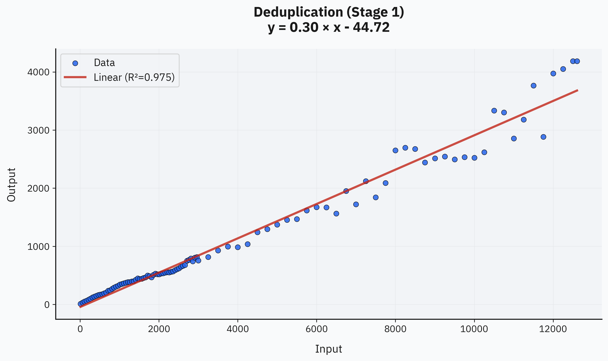
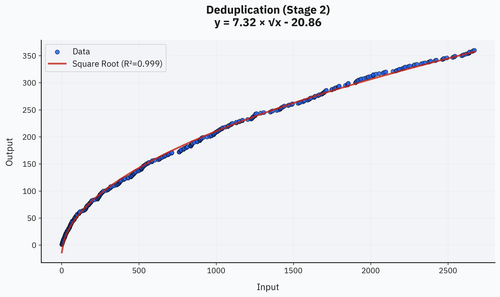
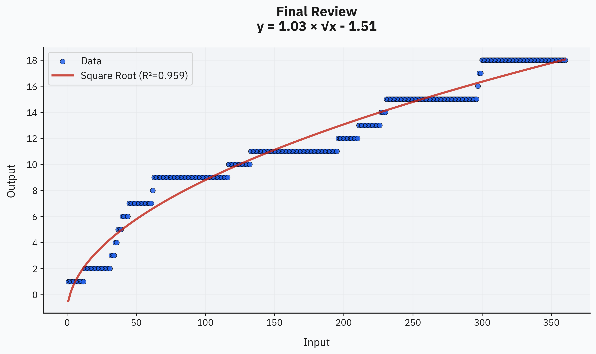
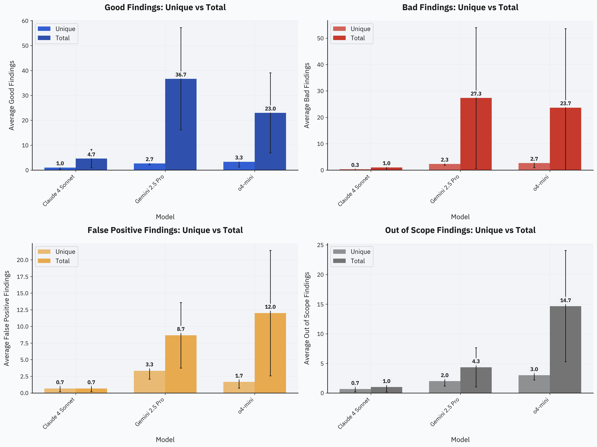
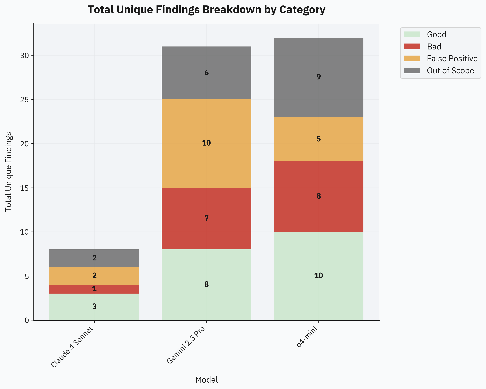
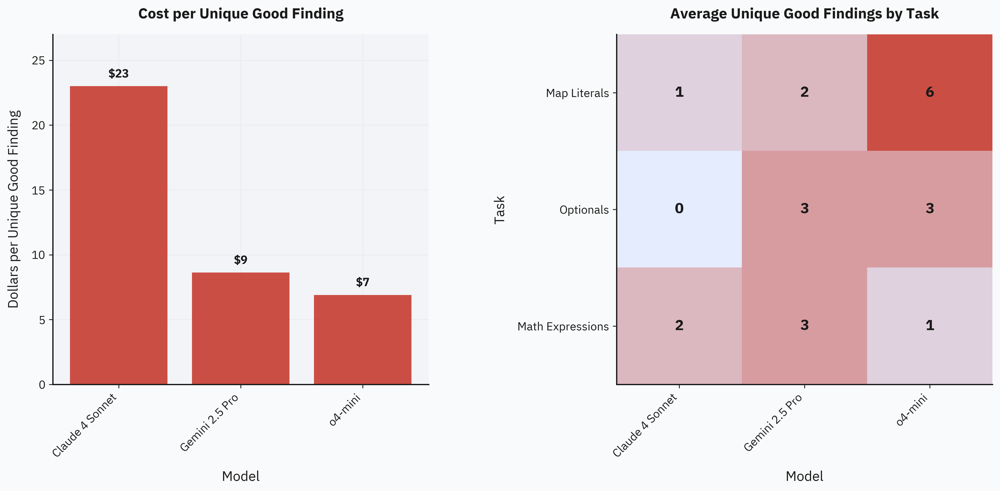
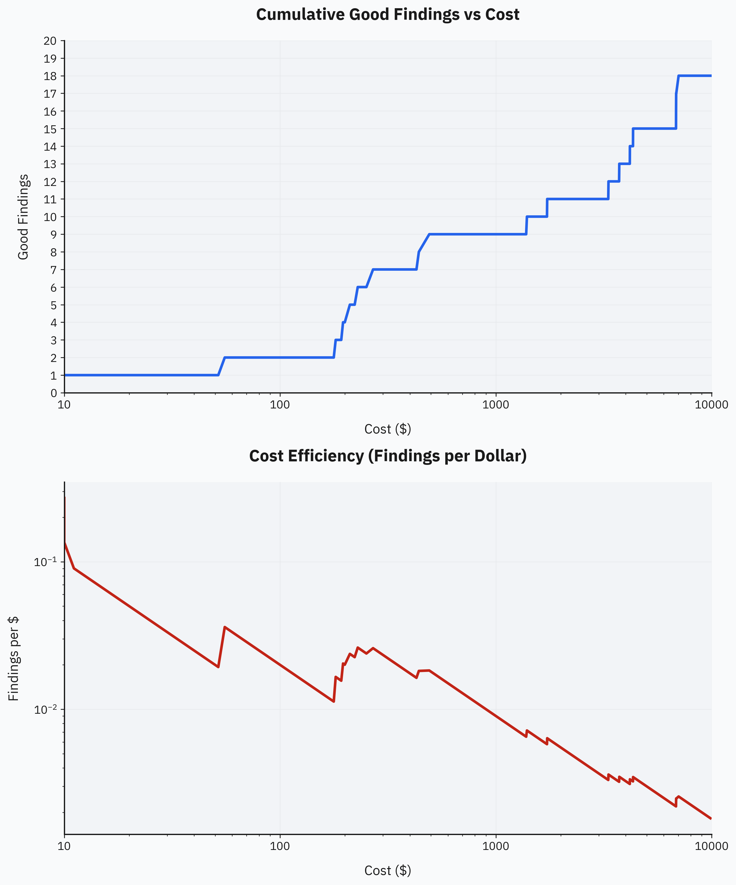

Billions of Tokens Later: Scaling LLM Fuzzing in Practice
Introduction
LLM-powered fuzzing is a fresh topic, with the first notable works dating to 2023, and it hasn't been explored much yet. However, this technique is very promising due to its simplicity and ability to scale across different dimensions. Our previous post explored a purely documentation-driven black-box fuzzing approach, where agents only get access to documentation and are tasked to find bugs, as well as documentation inconsistencies and mismatches.
After these initial experiments, we at TON Studio decided to analyze how effective this technique can become at scale. At the moment of publishing this post, we've spent a total of $2,000 solely on API credits—primarily to evaluate different models and setups. Additionally, during this period, we had unexpected and unlimited free access to an early checkpoint of GPT-4.1 (also known as quasar-alpha) on OpenRouter. We fully utilized this opportunity by processing over 14B tokens (equivalent to approximately $10,000 at standard GPT-4.1 pricing) and generated hundreds of thousands of code snippets to stress-test the compiler. We specifically focused on a single broad topic to analyze how fuzzing efficiency evolves over extended runs.
Around the same time, OpenAI released Codex—an autonomous coding agent with very forgiving rate limits. We experimented with Codex as a white-box fuzzer, achieving extremely promising results. We used it not only on the Tact compiler repository but also on several external projects—two other compilers and two popular TypeScript libraries widely adopted within the TON community.
In total, we discovered and reported 112 real issues using both techniques. We also drew key conclusions for future improvements and next steps for both white-box and black-box approaches. This post presents detailed insights, notes, and charts compiled over the past months. We're sharing these results to support future research in this area and as a transparent public record of our work at TON Studio.
Methodology
Experimental Design
The primary target for most fuzzing experiments was the Tact language monorepo, consistent with our previous study. However, this time we also expanded the scope and tested several additional projects. The full list of targets included:
- Three programming languages: Tact, FunC and Tolk
- TON Blockchain core
- @ton/core TypeScript library
- Sandbox framework
We applied black-box fuzzing exclusively to the Tact language monorepo, while all other targets were tested using the white-box approach, chosen due to its minimal setup requirements.
Within the Tact language, we fuzz-tested all major documentation pages, covering the majority of language features. Most documentation was processed using o3-mini. Additionally, we selected three specific features to compare frontier LLMs. For these comparisons, we evaluated o4-mini, Claude 4 Sonnet, and Gemini 2.5 Pro models on black-box fuzz-testing of:
- Map Literals
- Optionals
- Math Expressions
We tested several other models too, including GPT-4.1, Gemini 2.5 Flash, and DeepSeek V3, but none showed promising results, so we stuck with the three models mentioned above.
Apart from regular fuzzing runs, we also attempted an extremely large-scale run with quasar-alpha—a model that was unexpectedly available for free and without rate limits on OpenRouter from April 3rd to April 14th. We ran fuzz-testing almost non-stop for three days, processing over 14B tokens. For this experiment, we chose the "Structures and Contract Fields" part of the language because it provided a broad scope, giving the model ample room to explore.
For white-box fuzzing, we exclusively used Codex, released on May 16th, since it immediately became available to Pro users with very forgiving rate limits and required minimal setup. We didn't evaluate any other coding agents or apply special configurations to Codex—just ran it "out-of-the-box," selecting the desired repository and prompting it to find bugs, either in the entire project or within specific components for better focus.
Fuzzing Workflow
To better understand the black-box approach, it would be useful to first read our previous post on this topic, where we explain the core fuzzing agent workflow, provide an example of the system prompt used, link to the reproduction repository, and share other relevant details.
However, some things have changed since then. One notable change is the way we provide context from documentation to agents. Initially, RAG was used via OpenAI's native file-search API, and we planned to implement custom RAG for compatibility with models from other providers. During experimentation, though, we decided to simply give models a few documentation pages related to the fuzzing scope, along with a "Learn Tact in Y Minutes" page, which provides extensive examples of syntax and feature usage. Surprisingly, this turned out to work very well—even though models had no other access to the documentation.
We also removed the special
found_issues.md file we previously
maintained manually while reviewing findings.
This file was intended as a native deduplication
mechanism, but in practice, it confused agents
badly. Despite explicit instructions to avoid
already listed bugs, agents often reproduced
bugs from this file. Even if they didn't
reproduce them exactly, the presence of these
"already found" issues biased the exploration
path, significantly reducing entropy and
diversity of new findings. Removing this
mechanism notably improved our results.
Apart from these changes, the rest of the black-box fuzzing code remains nearly the same. There's not much to tweak in the fuzzing script itself, so our experimentation primarily focused on adjusting prompts, selecting topics, and evaluating different models.
Regarding the white-box approach, the workflow was perhaps even simpler than black-box fuzzing because we leveraged an existing agent rather than implementing one from scratch. OpenAI's release of Codex offered an immediate opportunity for us to ask it to "find bugs" in our repositories. And it just worked! Implementation was straightforward: we prompted Codex to identify bugs either across entire repositories or within specific components. Codex would read the source code, hypothesize potential issues, generate code snippets to reproduce them, and summarize the identified problems. Typically, we duplicated the same prompt 20–40 times per target, and a large portion of these runs yielded meaningful findings. Although there were occasional hallucinations and irrelevant results, these were easily filtered out with a quick glance.
Deduplication and Filtering Pipeline
The deduplication process consisted of two stages. Implementation source code is available in our LLM-Fuzz repository.
Stage 1: Embedding-based Clustering
Deduplication is tricky because findings can look very similar at first glance yet result from entirely different issues—or appear completely different despite sharing the same underlying cause. To address this, we implemented a two-stage deduplication pipeline described below.
This first stage was developed primarily to simplify the review process for the roughly 12.6k findings generated by quasar-alpha. It had to be inexpensive, fast, and reliable. The initial step involved generating short summaries of all findings using GPT-4.1. The prompt for these summaries was:
You are a senior compiler engineer. One paragraph ≤55 words: start with construct, state fault and misleading symptom; tiny code in back-ticks, use ... to trim, no fillers, no bullets, no IDs/paths.An example summary:
Construct: nested struct default value expansion. Fault: the compiler fails to transitively expand default fields in nested structs, triggering an internal error (`[INTERNAL COMPILER ERROR]: Struct value is missing a field: x`) on `NestedDefaults{}` with a nested defaulted field `InnerDef{}`. Symptom: crash, not a graceful diagnostic, despite code like ``struct ... { b: InnerDef = InnerDef{}; } ...`` being valid by documentation.Generating these summaries is fast and cost-effective, consuming approximately $50 total for 12,607 findings. This cost could potentially be reduced by 4–5x if using GPT-4.1 mini, without significantly compromising summary quality.
Next, we embedded these summaries. This step is straightforward, and we chose the text-embedding-3-large model mainly for convenience and easier integration. Recently released embedding models such as Qwen3-Embedding-8B and gemini-embedding-001 offer improved quality, and we plan to use them in future runs. This embedding step was even cheaper, costing about $1 for the same 12,607 findings.
With embeddings generated, we applied a clustering algorithm to filter out obvious duplicates. The key idea here is that generating strict-format summaries removes noise from varied wording and different examples of the same issue—the type of noise that would otherwise make embeddings differ unnecessarily.
Specifically, we used density-based clustering with HDBSCAN, setting a minimum cluster size of 2. After clustering, we retained all noise points and selected one representative per cluster. This process took only a few minutes for 12,607 findings on a MacBook Pro and was practically instantaneous for smaller runs.
As a result, we narrowed down the original set of findings to 2,706 unique entries after this initial deduplication stage.
Stage 2: LLM-assisted Deduplication
When we began reviewing these 2,706 findings, it quickly became clear there were still too many duplicates for comfortable manual review, requiring an additional, more intelligent filtering step. The solution was simple: ask an LLM to check if each new finding was unique, keeping track of previously identified unique issues as context. We used Gemini 2.5 Flash with reasoning enabled. The prompt for this stage was:
You are a senior bug-triage assistant. Decide if the NEW finding duplicates any previous UNIQUE finding and reply with JSON matching schema.
The response schema included a
duplicate field with possible
values YES, NO, or
NOT SURE, along with an optional
duplicate_of field to indicate the
previously seen issue it duplicates. We retained
all issues marked either NO or
NOT SURE to ensure no genuine
findings were overlooked.
After running this approach on smaller datasets (fewer than 100 findings) and observing nearly perfect accuracy, we applied it to the larger dataset of 2,706 findings from quasar-alpha. However, it became apparent that keeping all previously identified unique issues directly in the model's context was impractical. The context rapidly became bloated, impairing the model's reasoning capability. Our straightforward solution was to store all unique findings externally and, at each step, retrieve only the top-K most similar past issues based on embedding similarity. This method worked very effectively, and we set K = 10. As a result, the extremely large run was condensed from 2,706 findings down to just 360 unique findings.
The quality of this deduplication process was very good, especially given its low cost and simplicity. It could potentially be improved further by adopting a higher-quality embedding model, fine-tuning clustering parameters, or refining the Stage-2 prompt. However, even with the current setup, the quality was sufficient: during manual review, there were definitely some duplicates, but only on the scale of about a dozen rather than thousands. Additionally, a few genuine issues were mistakenly marked as duplicates during one of the filtering stages, but the overall error rate remained well within acceptable limits.
Manual Review Process
After deduplication, we manually reviewed the remaining unique findings, similar to what we did in earlier experiments. This time, however, we labeled findings more carefully. For smaller-scale comparison runs between frontier models, we adopted a four-label system:
- False Positive: When there's a clear factual error or hallucination, such as a non-existent syntax or function, significantly impacting the validity of the finding.
- Out of Scope: Similar to "False Positive," but specifically for findings addressing features outside the intended context. Since the models receive context limited to specific features, they can easily hallucinate unrelated details. We separated these cases for clearer analysis.
- Bad: No hallucinations, but the finding is bad in the sense that it wasn't valuable or meaningful enough to report—due to low quality or irrelevance.
- Good: Findings that were actually reported to the team for fixes.
For the large-scale quasar-alpha run, we simplified labeling to just "Good" or "Bad," as detailed classification was too time-consuming. Manually reviewing 360 unique findings from the quasar-alpha run took roughly 5 hours of focused effort, averaging about 50 seconds per finding. Most findings were labeled within seconds after a quick glance, though a few required deeper reading, reproduction attempts, and additional thought.
Ultimately, we identified 18 good findings out of the 360 reviewed. Some had already been reported and fixed before our manual review began, while others were newly reported to the repository.
Scaling Strategy
For regular fuzzing runs with o3-mini, we didn't precisely track token usage or exact spend per run. Instead, we empirically found that spending about $15–25 per documentation page is a good balance. It's affordable, doesn't produce an overwhelming amount of findings to manually review, and consistently yields at least a few valuable unique issues for most documentation areas.
For the nine model-comparison runs, we decided on a fixed budget cap of $25 per run. We picked this number based on previous experience with o3-mini, where this budget proved sufficient for a meaningful baseline. Each documentation page (feature) was fuzzed independently within this limit, ensuring short, isolated runs. This kept the context manageable and avoided an explosion of duplicates before the filtering stage.
Results
Overall Summary
As a result of all these experiments, we discovered and reported a total of 112 issues, distributed as follows:
- Black-box: 65 (all in the Tact repository)
-
White-box: 47
- Tact Compiler: 35
- FunC Compiler: 3
- Tolk Compiler: 2
- TON Blockchain Core: 0
- @ton/core TypeScript library: 5
- Sandbox framework: 2
Our total spend was around $2,000, averaging roughly $17 per real issue. However, this calculation isn't fully accurate since the large-scale quasar-alpha run and Codex experiments incurred practically zero cost. Excluding issues found using Codex and quasar-alpha, the effective average cost per issue rises to about $40, which is still very reasonable, especially given the scale of this evaluation.
In addition to these reported issues, we accumulated about 365k successfully compiling and 105k failing code snippets. These will be useful for backward-compatibility checks in future compiler releases, as well as for external tool testing, such as formatters. However, it's important to note that a large portion of these snippets originated from the single extensive quasar-alpha run on one specific language feature, making this dataset somewhat less diverse than the raw numbers suggest.
Pipeline Efficiency
The pipeline became highly efficient overall—especially the deduplication flow. On large-scale runs, it significantly reduces human-hours required for processing and manual review, by orders of magnitude. Even on smaller runs, it greatly simplifies the review workload: instead of repeatedly seeing similar findings, we review only a handful of genuinely unique ones.
There aren't any particularly expensive or slow parts in the pipeline, allowing it to scale as far as practically desired. A key insight here is that the rapidly improving intelligence and agentic capabilities of LLMs strongly benefit this approach. As models continue to improve quickly, the entire pipeline—from initial fuzzing through deduplication and manual review—gets even faster, cheaper, and produces better-quality results.
Scaling Laws
A core objective of this research was to analyze how fuzzing efficiency evolves as we invest more and more compute into a single run. The sudden free availability of quasar-alpha provided a perfect opportunity for this large-scale experiment. As mentioned earlier in the Methodology, we started with 12,607 raw findings, reducing to 2,706 after Stage 1 deduplication and down further to 360 after Stage 2. Manual review revealed just 18 good findings out of those 360. At first glance, this sounds like a poor result—with an effective cost of around $555 per issue—but the scaling patterns reveal a clearer story.
The first stage (clustering-based deduplication) shows a clear linear trend. There's noise at larger dataset sizes, but overall, the linear pattern fits very well, with a coefficient around 0.30. This relationship might slightly change if clustering parameters are tweaked, but we expect it to remain linear at least up to the 1e4 scale:

The second stage (LLM-assisted deduplication) closely matches a square-root curve, with an almost perfect fit. This makes intuitive sense since Stage 2 performs intelligent deduplication beyond basic clustering. Combining these two stages suggests roughly sqrt(N) unique findings for every N total findings:

Surprisingly, manual review of the final set also shows a clear square-root pattern. While the fit isn't perfect due to having only 18 data points, it matches expectations well—the number of good findings shrinks similarly to unique findings. Thus, the observed law is roughly sqrt(N) good findings per N unique findings:

Combining all three stages gives an overall scaling of approximately sqrt(sqrt(N)) good unique findings per N total raw findings. This slow-growing curve aligns reasonably well with previous research on fuzzing scaling behaviors. Classical fuzzing methods often follow exponential-saturation or coupon-collector curves, differing from our observed quarter-power (√√N) curve. It's possible that a curve shift might occur at much larger scales (like 1e5+), but practically, scaling up to that level would require spending millions on compute alone—which currently doesn't seem viable for our use cases. If the cost-to-intelligence ratio improves significantly with future model advances, we might revisit large-scale evaluations at higher orders of magnitude. For now, the gathered data is sufficient for practical applications with the current generation of models.
Model Comparison
In this research, we fully evaluated just three models: o4-mini, Claude 4 Sonnet, and Gemini 2.5 Pro. As mentioned in the Methodology, we also tried several other popular models—including some non-reasoning ones—but their results were consistently poor. Therefore, we decided to focus only on frontier reasoning models for higher-quality findings.
All findings were labeled manually. Here's the detailed breakdown across different labeling categories:

o4-mini and Gemini 2.5 Pro produced the most unique findings—both yielding around 10 unique findings per topic within the $25 budget:

Claude 4 Sonnet, however, performed unexpectedly worse. There's likely some bias in our evaluation prompts since we used the same prompt structure initially developed for o3-mini and o4-mini. Interestingly, earlier experiments with Claude 3.7 Sonnet showed significantly better results. This suggests the poor performance might be an issue with this particular Claude version. Generally, Claude 4 Sonnet is considered a strong agentic coding model, but it didn’t fit our black-box fuzzing scenario as effectively as we anticipated.
Both Gemini 2.5 Pro and o4-mini rapidly produce a large number of initial findings. While this isn't inherently a problem—since they still find valuable unique issues—many results end up as duplicates. In terms of cost efficiency specifically, o4-mini clearly leads, averaging just $7 per unique good finding, compared to $9 for Gemini 2.5 Pro and $23 for Claude 4 Sonnet:

Overall, the comparison confirms that o3-mini and o4-mini were indeed excellent initial choices for our fuzzing pipeline. We haven't yet fully evaluated the full o3 model, but with its recent price drop, we anticipate it could potentially yield even better results.
Initial Thoughts on White-box Fuzzing
Our initial experiments with white-box fuzzing turned out very successful. The bug discovery rate was significantly higher compared to black-box fuzzing, which is completely expected. Initially, we focused primarily on black-box methods because they were cheaper and required no complex setup. Over time, however, the arrival of models like Claude Code and Codex made white-box fuzzing significantly easier and more scalable.
Even with manual prompting and minimal setup,
Codex identified a total of 47 bugs. The success
rate varied depending on the specific target.
For instance, when asked explicitly to find ways
of triggering special cases of
INTERNAL COMPILER ERROR in Tact,
Codex quickly uncovered 6 distinct bugs. In
comparison, after hundreds of thousands of
attempts, our black-box fuzzing pipeline only
discovered 4 similar bugs. This difference makes
sense—white-box fuzzing benefits from direct
access to the codebase, allowing the model to
proactively pinpoint potentially vulnerable code
and then specifically craft inputs to trigger
these cases.
Overall, the white-box approach demonstrated extremely promising results, and we plan to increasingly emphasize this direction in future experiments.
Feature-specific Observations
Different language features and documentation sections yielded varying fuzzing results. We noticed these variations were mostly correlated with the clarity and quality of the documentation itself, as well as how standard or common the specific feature is among mainstream programming languages. For example, models often hallucinated when fuzzing blockchain-specific concepts such as addresses, but performed noticeably better on standard language constructs, like mathematical expressions.
Additionally, the complexity of the fuzzing target mattered significantly. While we didn't observe major problems with complexity in our black-box fuzzing runs, our white-box attempts encountered difficulty with particularly complex targets. Specifically, Codex failed to find any meaningful bugs in the TON Blockchain Core despite running over 200 attempts. After analyzing its behavior, we concluded the model often became lost within the large codebase, struggling to distinguish intended behavior from actual issues.
Analysis and Discussion
Interpreting the ¼-Power Curve
Diminishing returns are expected in any form of software testing, and fuzz-testing is no exception. However, traditional fuzz-testing methods often struggle with complexity, requiring substantial effort for initial setup, making it challenging to scale horizontally. In contrast, the LLM-based approach benefits from simplicity and ease of horizontal scaling. While LLM fuzzing also exhibits diminishing returns, we can easily mitigate this by running many smaller, tightly scoped fuzz tests across multiple topics. The observed √√N curve grows slowly enough that scaling individual runs extensively isn't optimal—instead, it's better to prioritize breadth by covering more unique topics first.
The practical implication of this √√N curve is clearly visible in the plot below: achieving even modest improvements in cumulative good findings requires disproportionately large increases in compute. Specifically, to roughly double the number of good findings, you'd typically need to scale up the total compute budget by an order of magnitude or more.

In future runs, we'll apply the insights gained from these experiments. Specifically, we'll first compile a broad set of fuzzing targets, then allocate budget evenly across them, proportional to the total available resources. The key rule of thumb is to keep each run narrowly scoped, at roughly equal budget, and only consider scaling individual runs upward once we've exhausted simpler breadth-based coverage.
We also expect this scaling law to apply equally to both black-box and white-box fuzzing. There's no reason to anticipate significant differences, making these insights broadly useful for our future experiments across both fuzzing approaches.
Model Selection Insights
Our model comparisons clearly demonstrated that cost doesn't necessarily correlate with effectiveness. Both cheaper and more expensive models can perform similarly well, provided they possess strong reasoning capabilities. Robust reasoning capability is critical because it significantly reduces false positives and avoids basic logical mistakes. Ultimately, the optimal strategy is to select the most cost-effective reasoning model that can reliably handle the complexity of the fuzzing target.
Based on current evaluations, the best choice for most black-box fuzzing scenarios is likely o4-mini. However, we haven't yet fully evaluated the full o3 model, which could potentially deliver even better cost-effectiveness—especially following its recent price drop.
Limitations & Open Questions
- Deduplication parameters tuning – The exact parameters we chose for clustering and filtering (e.g., HDBSCAN's min_cluster = 2, ε = 0, and top-K = 10 nearest neighbors) were selected heuristically based on preliminary experiments. Adjusting these thresholds or using newer embedding models (like Qwen3-Embedding-8B or gemini-embedding-001) might significantly impact compression ratios and overall pipeline efficiency. Systematic exploration of parameter sensitivity is left open for future investigation.
- Scaling beyond 10⁴ findings – Our largest manually reviewed set after Stage 1 was limited to 2,706 findings. Classical fuzzing theory often predicts eventual saturation (coupon-collector style), but it's unclear if—or when—our observed quarter-power (√√N) scaling might shift towards a similar saturation pattern. Evaluating this empirically would require spending millions on compute, making it impractical until model prices substantially decrease or efficiency significantly improves.
- Limited model comparison scope – Our current model comparisons were conducted under restricted conditions: a fixed $25 budget per run, a single prompt format derived from previous experiments, and only three frontier models fully evaluated (o4-mini, Gemini 2.5 Pro, and Claude 4 Sonnet). Although broader experimentation—including varying prompts, budgets, and evaluating additional models—is needed for robust generalization, the current results still provide a useful baseline. Models like o4-mini or Gemini 2.5 Pro already demonstrate solid cost-efficiency and are good practical choices for fuzzing.
Conclusion
These experiments clearly show that LLM-based fuzzing can successfully scale to billions of tokens, consistently yielding valuable results and actionable insights. Even though we observed diminishing returns following a quarter-power (√√N) scaling law, this slow growth is easily mitigated by distributing fuzzing efforts across multiple narrowly-scoped runs. Our deduplication pipeline further enhances efficiency by significantly reducing the manual review burden.
Our model selection analysis confirmed that strong reasoning capabilities are the single biggest factor influencing cost efficiency. Cheaper reasoning models like o4-mini delivered excellent performance, effectively balancing cost and quality. This confirms the practical viability of LLM-based fuzzing for industrial-scale applications.
Overall, the main takeaway is that LLM-driven fuzzing is not only viable but economically efficient at production scales—particularly when combined with careful budgeting, targeted test runs, and intelligent deduplication. As models and techniques continue to rapidly improve, we expect this approach to become even more widely applicable and cost-effective.
We're proud of these initial results and look forward to further integrating LLMs into our fuzzing workflows at even larger scales, while also exploring new research directions.
Future Work
Automation and Duplicate Awareness
Our next big step is fully automating the review pipeline. The idea is straightforward: launch an agent (like Claude Code in Docker) to automatically reproduce each unique finding and confirm if it's a real issue. If confirmed, the agent will directly check GitHub for duplicates, and if it's truly new, autonomously submit a concise, structured issue.
Automating the validation, duplicate checking, and issue submission process would allow us to run fuzzing sessions completely unattended, with minimal human involvement. Instead of spending hours manually reviewing findings—like the 5-hour session required for quasar-alpha—we'd simply prompt the system on what to test, and it would handle the rest autonomously. This setup would greatly simplify scaling, eliminate tedious manual duplicate checks, and speed up the entire fuzzing workflow.
Massively Parallel White-box Fuzzing
Initial manual tests with Codex were promising, so we're planning to scale white-box fuzzing. With generous API limits (like Claude Max subscription), we can easily run dozens of fuzzing agents simultaneously, each in its own Docker container. Each agent would independently pick a part of the project, run short fuzzing sessions, and push findings directly into the automated review pipeline described above.
The ultimate goal here is simplicity: provide the system with just a repository URL, and it automatically spins up parallel fuzzing agents, verifies findings, checks for duplicates, and creates ready-to-fix GitHub issues—all with zero manual intervention.
References
- (2016). Coverage-based Greybox Fuzzing as Markov Chain. Proceedings of the 2016 ACM SIGSAC Conference on Computer and Communications Security, pp. 1032-1043.
- (2013). Scheduling black-box mutational fuzzing. Proceedings of the 2013 ACM SIGSAC Conference on Computer and Communications Security, pp. 511-522.
- (2012). Swarm testing. Proceedings of the 2012 International Symposium on Software Testing and Analysis, pp. 78-88.
- (2018). Evaluating Fuzz Testing. Proceedings of the 2018 ACM SIGSAC Conference on Computer and Communications Security, pp. 2123-2138.
- (2017). OSS-Fuzz - Google's continuous fuzzing service for open source software. Proceedings of the 26th USENIX Security Symposium.
- (2024). LLM-Fuzzer: Scaling Assessment of Large Language Model Jailbreaks. Proceedings of the 33rd USENIX Security Symposium.
- (2024). On the Challenges of Fuzzing Techniques via Large Language Models. arXiv preprint arXiv:2402.00350.